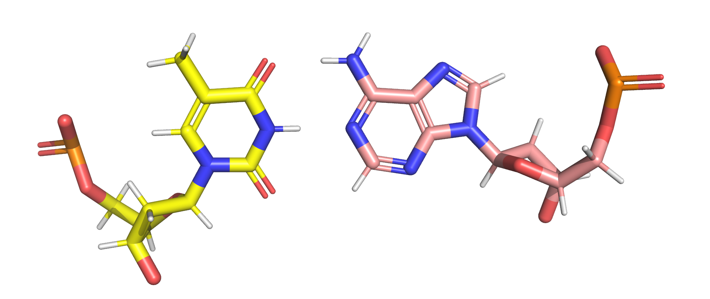

Adding partial charges to mol2 files¶
This tutorial demonstrates how to transfer partial charges from an GROMACS rtp (residue topology file) to a mol2 coordinate file.
Before starting, make sure that you have the following modules installed - Pandas and Biopandas (install via conda conda install -c conda-forge biopandas pandas) - Fluordynamics
[1]:
import pandas as pd
from biopandas.mol2 import PandasMol2
import fluordynamics as fd
[2]:
import importlib
importlib.reload(fd.ff)
[2]:
<module 'fluordynamics.ff' from '/mnt/c/Users/fsteffen/Github/fluordynamics/fluordynamics/ff.py'>
Here we will add partial charges from the AMBER14 force field to the RNA and DNA mononucleotides. Load the deoxyribonucleotides mol2 files (with hydrogen names adapted to the AMBER ff) along with the corresponding rtp entries from the AMBER force field.
[4]:
DA_mol2 = PandasMol2().read_mol2('../fragments/bases/in/deoxyadenosine.mol2')
DT_mol2 = PandasMol2().read_mol2('../fragments/bases/in/deoxythymidine.mol2')
DG_mol2 = PandasMol2().read_mol2('../fragments/bases/in/deoxyguanosine.mol2')
DC_mol2 = PandasMol2().read_mol2('../fragments/bases/in/deoxycytidine.mol2')
RA_mol2 = PandasMol2().read_mol2('../fragments/bases/in/adenosine.mol2')
RU_mol2 = PandasMol2().read_mol2('../fragments/bases/in/uridine.mol2')
RG_mol2 = PandasMol2().read_mol2('../fragments/bases/in/guanosine.mol2')
RC_mol2 = PandasMol2().read_mol2('../fragments/bases/in/cytidine.mol2')
DA_rtp = pd.read_csv('../forcefields/amber_rtp/dna.rtp', skiprows=89, sep='\s+', nrows=32, comment=';', names=['atom_name', 'atom_type', 'charge', 'nr'], na_filter=False)
DT_rtp = pd.read_csv('../forcefields/amber_rtp/dna.rtp', skiprows=393, sep='\s+', nrows=32, comment=';', names=['atom_name', 'atom_type', 'charge', 'nr'], na_filter=False)
DG_rtp = pd.read_csv('../forcefields/amber_rtp/dna.rtp', skiprows=700, sep='\s+', nrows=33, comment=';', names=['atom_name', 'atom_type', 'charge', 'nr'], na_filter=False)
DC_rtp = pd.read_csv('../forcefields/amber_rtp/dna.rtp', skiprows=1007, sep='\s+', nrows=30, comment=';', names=['atom_name', 'atom_type', 'charge', 'nr'], na_filter=False)
RA_rtp = pd.read_csv('../forcefields/amber_rtp/rna.rtp', skiprows=92, sep='\s+', nrows=33, comment=';', names=['atom_name', 'atom_type', 'charge', 'nr'], na_filter=False)
RU_rtp = pd.read_csv('../forcefields/amber_rtp/rna.rtp', skiprows=397, sep='\s+', nrows=30, comment=';', names=['atom_name', 'atom_type', 'charge', 'nr'], na_filter=False)
RG_rtp = pd.read_csv('../forcefields/amber_rtp/rna.rtp', skiprows=693, sep='\s+', nrows=34, comment=';', names=['atom_name', 'atom_type', 'charge', 'nr'], na_filter=False)
RC_rtp = pd.read_csv('../forcefields/amber_rtp/rna.rtp', skiprows=1009, sep='\s+', nrows=31, comment=';', names=['atom_name', 'atom_type', 'charge', 'nr'], na_filter=False)


Use the fd.ff.pandasMol2_replace() function to add the charge column of the rtp file into the mol2 file. The atom_name column is used as the comparing index.
[5]:
fd.ff.pandasMol2_replace(DA_rtp, DA_mol2.df, 'charge')
fd.ff.pandasMol2_replace(DT_rtp, DT_mol2.df, 'charge')
fd.ff.pandasMol2_replace(DG_rtp, DG_mol2.df, 'charge')
fd.ff.pandasMol2_replace(DC_rtp, DC_mol2.df, 'charge')
fd.ff.pandasMol2_replace(RA_rtp, RA_mol2.df, 'charge')
fd.ff.pandasMol2_replace(RU_rtp, RU_mol2.df, 'charge')
fd.ff.pandasMol2_replace(RG_rtp, RG_mol2.df, 'charge')
fd.ff.pandasMol2_replace(RC_rtp, RC_mol2.df, 'charge')
Finally, save the updated mol2 files.
[7]:
fd.ff.write_mol2(DA_mol2, '../fragments/bases/out/deoxyadenosine.mol2')
fd.ff.write_mol2(DT_mol2, '../fragments/bases/out/deoxythymidine.mol2')
fd.ff.write_mol2(DG_mol2, '../fragments/bases/out/deoxyguanosine.mol2')
fd.ff.write_mol2(DC_mol2, '../fragments/bases/out/deoxycytidine.mol2')
fd.ff.write_mol2(RA_mol2, '../fragments/bases/out/adenosine.mol2')
fd.ff.write_mol2(RU_mol2, '../fragments/bases/out/uridine.mol2')
fd.ff.write_mol2(RG_mol2, '../fragments/bases/out/guanosine.mol2')
fd.ff.write_mol2(RC_mol2, '../fragments/bases/out/cytidine.mol2')
File already exists, do not overwrite
File already exists, do not overwrite
File already exists, do not overwrite
File already exists, do not overwrite
[ ]: